What
I’m in the process of renovating a small flat. The floors are in such a bad shape that floor leveling compound couldn’t solve the problem by itself. We needed a more elaborate approach. My goal is to measure the room in two dimensions. Then we can strategically pour the compound in the lowest areas. For this I need a two dimensional map of the height of the floor.

Contents
Contents
When
I’ve been renovating the flat for roughly a year now. The flat was in a very outdated and bad shape overall. It’s been quite some work. While electricity, plumbing, walls, tiles, painting was all relatively straight forward and close to my expectations, the floor turned into a big issue that I had underestimated.
Background
Background
The building is from a few years after the war. A period where experienced workers and materials were sparse. The building was hastely constructed and the result is that the floor is off by upto 1,5cm (over 1/2 inch) in some areas.
Unfortunately, for laminate floors, an offset of only roughly 3mm every 2m is tolerable. Otherwise you will sink in when standing on the boards, they will bend and eventually crack at the connecting grooves between two boards.
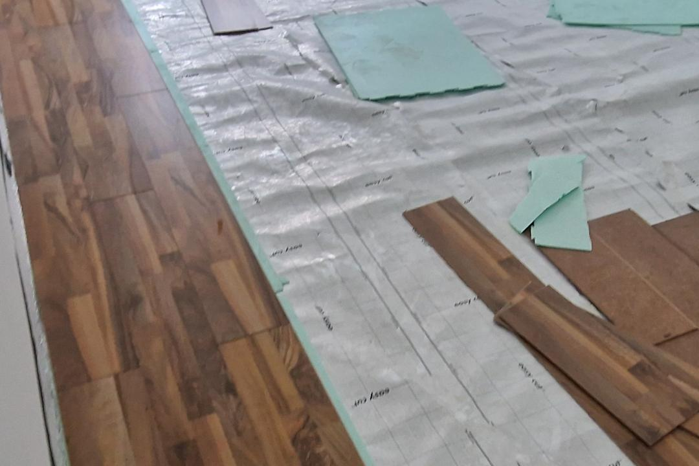
It was clear from the start that the floor was extensively damaged. It had never been fixed and carpet was placed on top of an old linoleum floor. One could see the cracks through the linoleum floor.
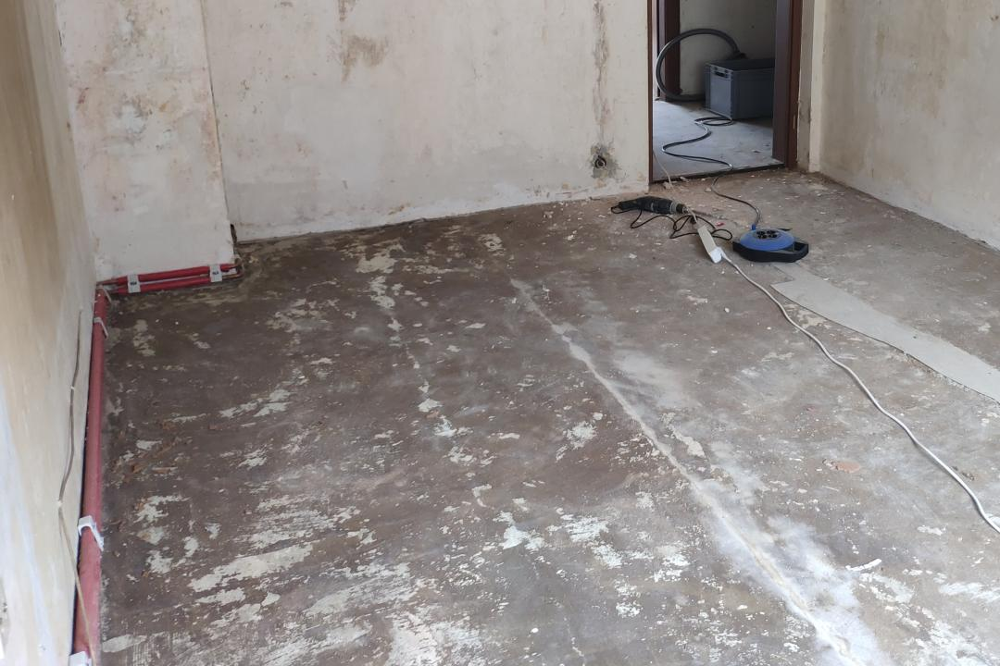
After removing the old floor I was able to visually inspect the large cracks and holes that were common place in most of the rooms.
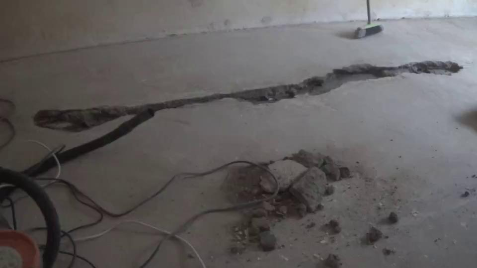
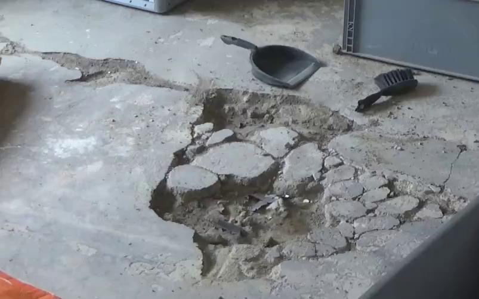
Apart from the floor, the building is structurally in a good shape. An image shows how floors in German buildings are typically constructed in layers. We are dealing only with damage to the top-most layers.
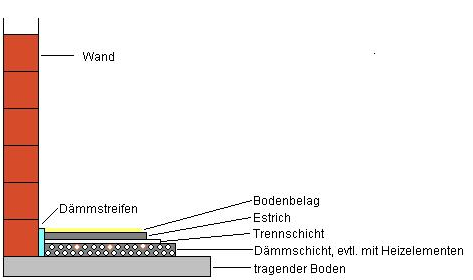
(Image taken from [1])
The structural components are uncoupled from the “estrich” (screed) by a thin film. On top of that comes the actual floor. The idea is to have hard material in the lowest layers and softer materials as we move upwards.
The holes largest holes were fixed by pouring new screed. The edges were filled with “reparatur beton” (concrete designed to fill such cracks).
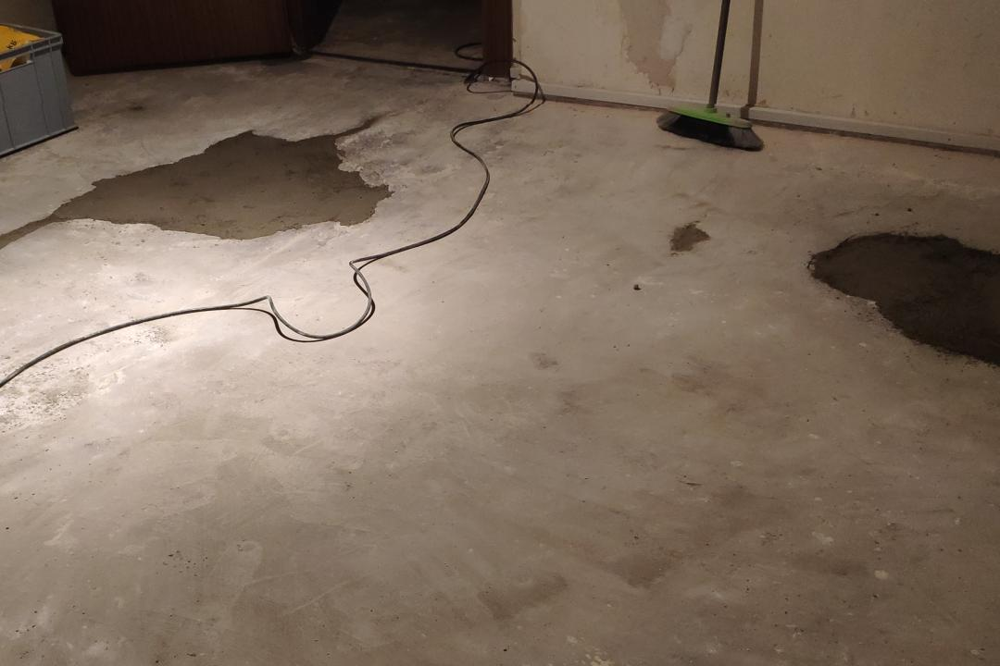
By day 52 of renovations we started pouring in leveling compound.
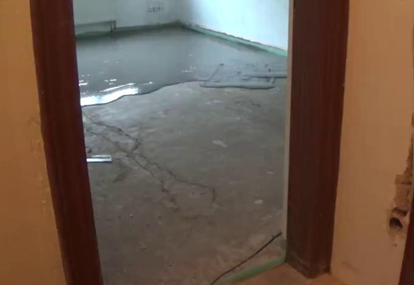
At the time I didn’t have accurate measurements of how bad this floor really was. Leveling compound works wonders, but only to some extent. If a floor is up by a centimeter or more in some areas, we would need to fill the rest of the room with more than a centimeter of leveling compound. That is often not feasable. It would be too expensive, the doors would have to be cut, door sills would be at different heights and you’d loose ceiling height.
What should have been done first is to grind the underlying screed to tolerable heights with an angle grinder. A tedious, noisy and dirty task. Something I don’t want to do based on feeling, but a solid measurement.
Since I had added leveling compound too early that leveling compound had to be removed in some areas. For leveling compound removal I found using a chisel to be the most effective method. Using an angle grinder makes a huge mess. The chisel can be driven underneath the leveling compound causing long cracks after which the compound can be picked up and removed easily.
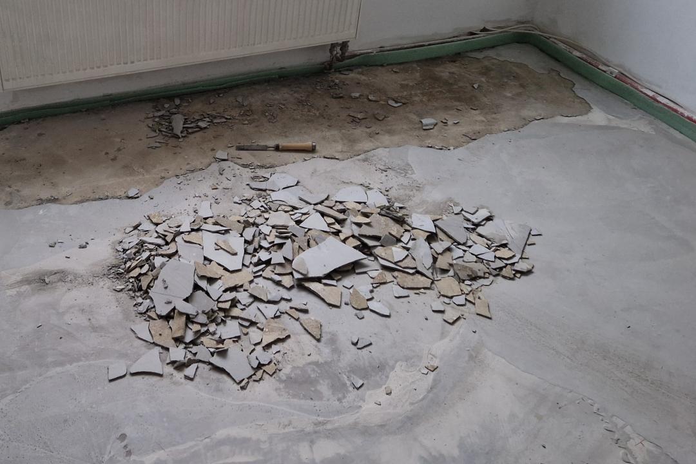
Traditionally builders would use long measuring rods. They place them on the floor and check whether they rock back and forth. Additionally they may lay a spirit level on top of the measuring rod to check if it is level. Another trick is to shine light underneath such a measuring rod it in order to see, if the surface is flat. That works well, but only along the rod. We can only measure one location and one direction at a time. With a very messed up floor like mine, the two reference points the rod sits upon could be either too low or too high scewing the entire measurement. This is where another technique is commonly used: floor leveling lasers. With a leveling laser in a corner of the room, we can move through the room with a ruler in hand and read the floor height by the laser line projected onto the ruler.
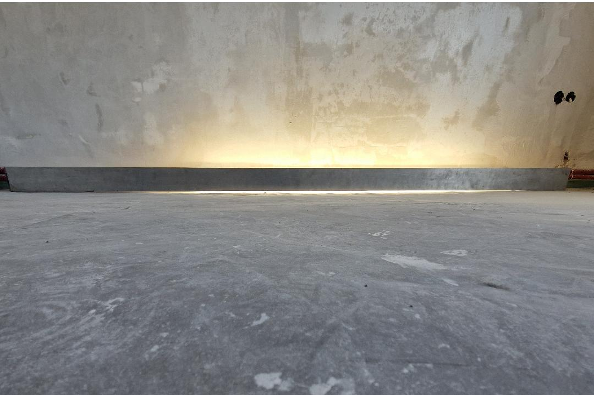
In practice it also doesn’t really matter whether the floor is slightly tilted to one side or not. What is more important smooth transitions. For laminate we need not more than 3mm difference on a 2m length. However, when we are this far away from a floor being level, it helps to have a universal “ground truth” of where the floor should be. Here the leveling lasers are the tool of choice.
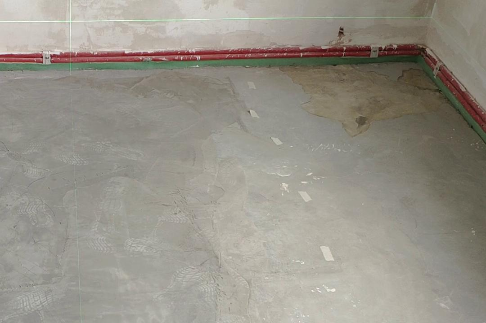
A leveling laser projects a laser line. It has an internal gimbal to ensure that the line is perfectly straight. We can then walk around with a ruler anywhere in the room and read the height of the floor.
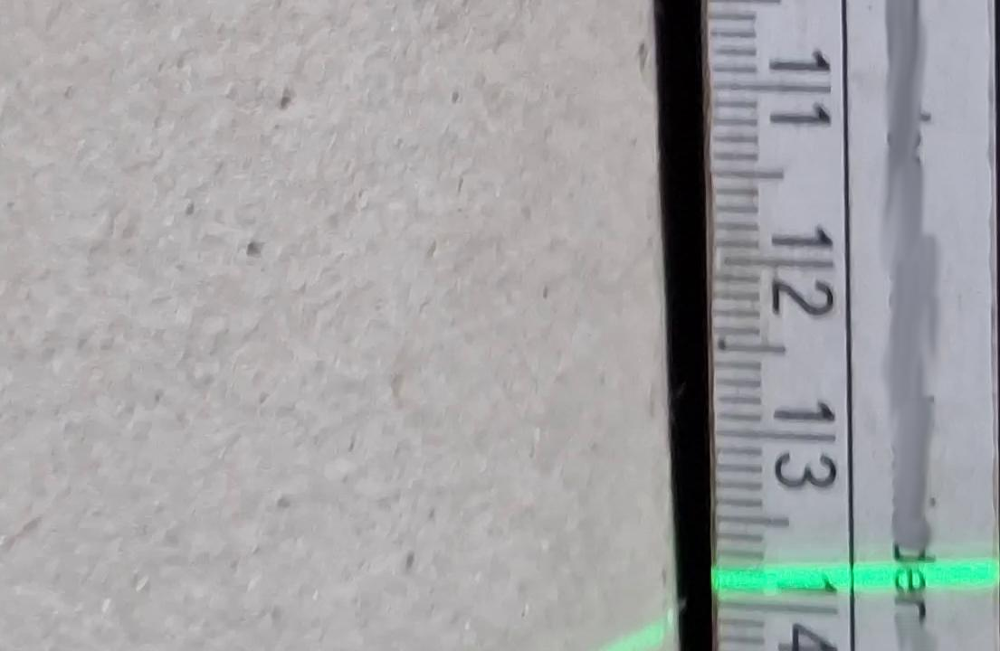
With knowledge of where the lowest valley is, we can then strategically pour leveling compound strategically in those sections first. This is necessary with such a broken floor. It is also much more effective than trying to fill the entire room in one go.
How
Measurement Methods
A two-dimensional heatmap of the height of the room would allow me to see where there are areas on the floor that are too high or too low. This would enable use to then strategically pour smaller quantities of the leveling compound on only the regions that need to be raised.
Camera-Based
In the next part of the series I’ll present my camera-based approach. The idea is to have two cameras. One filming the room from an elevated angle in order to track position in the room. Another filming the green laser line from a floor leveling laser on the ruler. The ruler is then moved through the room in a zig-zag pattern.
By aligning the two videos and analysing it, we can create a two-dimensional height map by hand.
This approach can be enhanced by using computer vision algorithms to produce the heatmap nearly automatically based off of the video.
Electronic-Method
A fully electronic method could involve an electronic target plate.
This target plate is used instead of the ruler and outputs height of the laser line digitally to a computer.
For positional information we could use a 360 degree Lidar and SLAM algorithms (see my previous posts on Lidar). These in turn require wheel odometry (see my previous posts on Wheel Odometry).
Progress
Conclusion
So far we’ve established the underlying problem. I’m in the process to designing visual and electronic measurement methods for 2D floor height measurment that I will cover in the next parts of the series.
1] https://de.wikipedia.org/wiki/Estrich